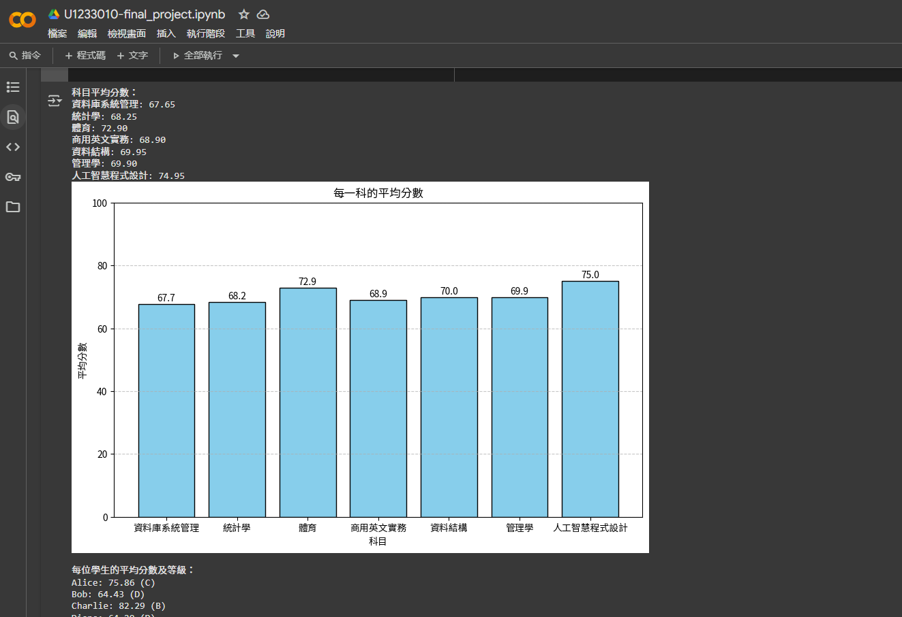

這是一個針對個人學習歷程設計的管理系統，讓使用者可以記錄學習目標、進度與反思。
系統前端使用 HTML、CSS 與 Bootstrap，後端則採用 PHP 搭配 MySQL 資料庫。
此專案為課堂作業的一部分，目前尚未部署上線，因此無法提供線上連結。
以下為幾張示意圖
這是一個使用 Google Colab 製作的分析工具。
使用者可以輸入每位學生的各科成績，系統會自動：
這個系統適合老師或教務人員快速掌握全班的學習狀況。
這個網站是我為自己建立的個人作品集，包含自我介紹、學習歷程、專案與技能展示。
使用 HTML、CSS、Bootstrap 打造簡潔美觀的介面，展現網頁設計與前端開發能力。
前往網站首頁